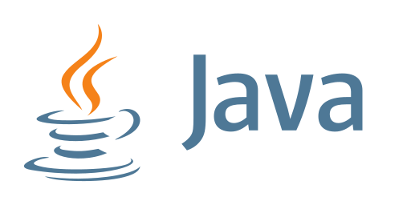
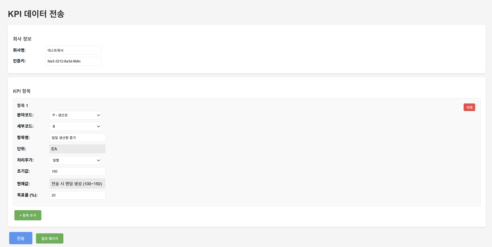
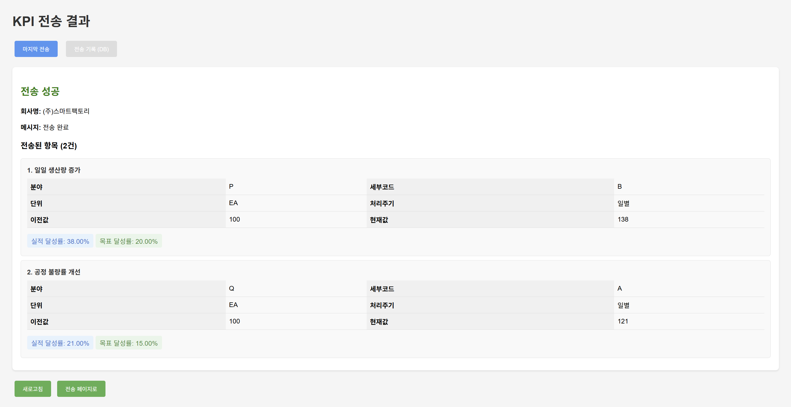
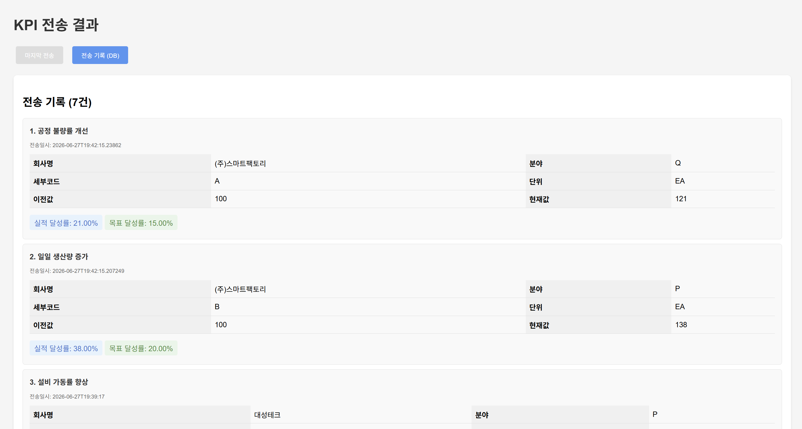

KPI
기업 KPI(핵심성과지표) 데이터 수집·전송 시스템
한양대학교 ERICA 스마트융합공학부 스마트ICT융합전공
2학년 자바프로그래밍기초 과제
2학년 자바프로그래밍기초 과제
Spring Boot
Java
Spring Data JPA
MySQL
Thymeleaf
개인 프로젝트
About Project
본 프로젝트는 기업의 KPI(핵심성과지표) 데이터를 입력받아 외부 KPI 수집 서버로 전송하고, 동시에 자체 데이터베이스에 기록하는 Spring Boot 기반 시스템입니다. 회사 정보와 다수의 KPI 항목을 폼으로 입력하면 항목별 달성률을 자동 계산하고 분야 코드에 따라 단위를 자동 매핑한 뒤, Lv2·Lv3 두 단계 규격으로 외부 서버에 REST 전송합니다. 자바프로그래밍기초 수업에서 시작해 JPA·MySQL 연동까지 단계적으로 확장한 과제입니다.
주요 기능
- KPI 입력 폼 · 회사명·인증키 입력, KPI 항목 동적 추가(+ 항목 추가)
- 달성률 자동 계산 · 전기 대비 당기 실적 변화율 산출
- 단위 자동 매핑 · 분야 코드(P·Q·D·C)별 단위(EA·%·원) 자동 설정
- 외부 전송 · RestTemplate으로 Lv2·Lv3 규격 JSON을 외부 KPI 서버에 POST
- DB 기록 · 전송한 KPI 항목을 KpiRecord 엔티티로 영속화
- 결과 조회 · 마지막 전송 결과 및 누적 DB 기록 조회 API
Screens
실제 동작 화면입니다. (외부 KPI 서버 미가용 구간은 데모용 데이터로 대체)

입력 폼 — 회사정보 · KPI 항목 추가 · 분야코드별 단위 자동 표시

전송 결과(마지막 전송) — 전송 성공 · 항목별 실적/목표 달성률

전송 기록(DB) — 회사별 KPI 전송 이력 누적 조회
Implementation
계층형(Controller–Service–Repository) 구조로 구성했습니다.
| 구성 | 설명 |
|---|---|
KpiController | REST API — POST /kpi 전송, GET /kpi/result 결과, GET /kpi/records DB 기록 |
HomeController | Thymeleaf 화면 라우팅 — 입력 페이지·결과 페이지 |
KpiService | 달성률 계산, 단위 매핑, Lv2·Lv3 JSON 빌드 및 RestTemplate 전송, 기록 저장 |
KpiRecord | JPA 엔티티 — 회사·분야코드·실적값·달성률·생성일시 컬럼 (@PrePersist 시각 자동기록) |
KpiRecordRepository | Spring Data JPA 리포지토리 — CRUD 자동 생성 |
Dto | KpiRequest·KpiResponse·KpiItem — 요청/응답/항목 데이터 전송 객체 |
templates/ | index(입력 폼)·result(결과) Thymeleaf 화면 |
Tech Stack
개발 환경
- 언어 · Java
- 프레임워크 · Spring Boot
- 빌드 · Gradle
- DB · MySQL
- View · Thymeleaf
핵심 기술
- REST API · @RestController 기반 KPI 전송·조회 엔드포인트
- 외부 연동 · RestTemplate으로 외부 서버 JSON POST
- ORM · Spring Data JPA · Hibernate ddl-auto 자동 매핑
- JSON 처리 · org.json으로 Lv2·Lv3 규격 페이로드 구성
- 계층 설계 · Controller–Service–Repository 분리
- Lombok · 보일러플레이트 코드 축소